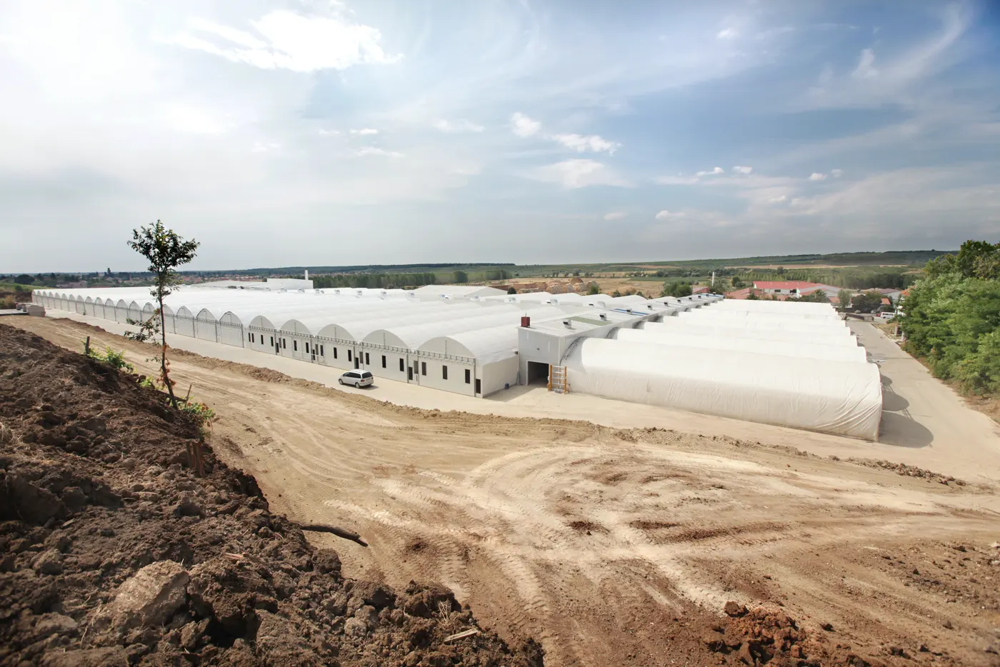
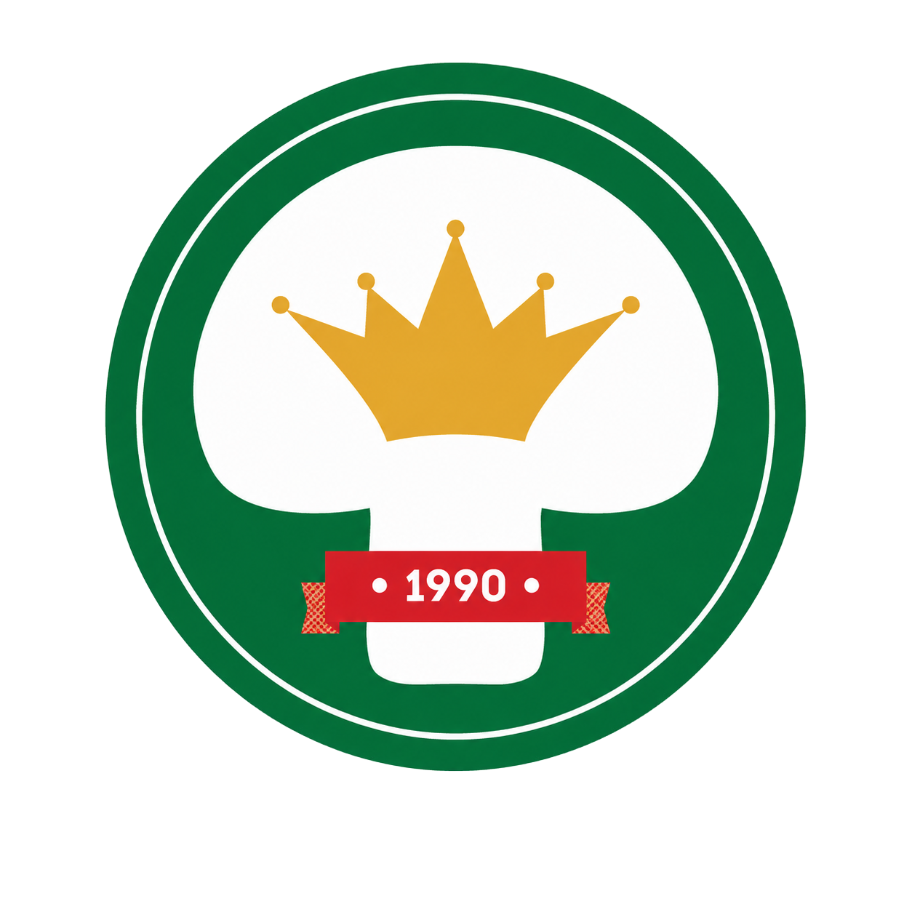

Mindegyikben a logó félig felhajtva áll, és rásimul a felületre. A csúszkával végigléptetheted a mozdulatot mind a tízen egyszerre — élesben ezt a görgetés fogja hajtani, tehát visszafelé is lejátszódik.
A matrica alja tapad, a felső fele el van emelve, és lefelé simul rá. A legtermészetesebb, ezt csinálja a kéz is.


Fordítva: a teteje tapad, az alja lóg el, és felfelé simul vissza. Kicsit szokatlanabb, jobban észreveszed.
Függőleges tengely körül nyílik ki, mint egy lap. Oldalirányú mozgás, jól illik a bal alsó sarki pozícióhoz.
A jobb alsó sarok tapad, az átellenes sarok van felhajtva — átlós tengely mentén simul le. Ez néz ki a leginkább „lehúzott matricának”.
Ugyanaz, mint az 01, de a végén túlfut és picit visszaleng — mintha a matrica rugózna, mielőtt megtapad. Élőbb.
A matrica két fele külön hajlik, eltérő szögben — a hajlás hullámként fut végig rajta, nem merev lapként mozog.
A felhajtott állapotban erős, elmosott árnyék van alatta, ami lesimuláskor összemegy és élesedik. Ettől érződik, hogy tényleg elemelkedik a felülettől.
Lesimulás közben fényreflex fut végig a matrica felületén, a mozgás felénél a legerősebb. Fóliás, prémium hatás.
Felhajtva a matrica krém hátoldala látszik, és ahogy lesimul, fordul át a logós oldalára. A leginkább fizikai megoldás.
Ahogy rásimul, egy finom nyomáshullám fut ki alóla a felületen, és a matrica egy hajszálnyit összemegy. Tapintható, „rányomtam” érzet.